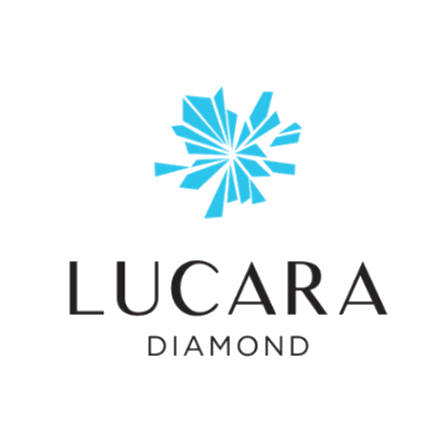
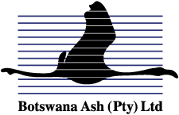
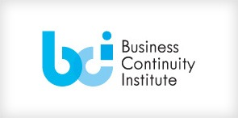
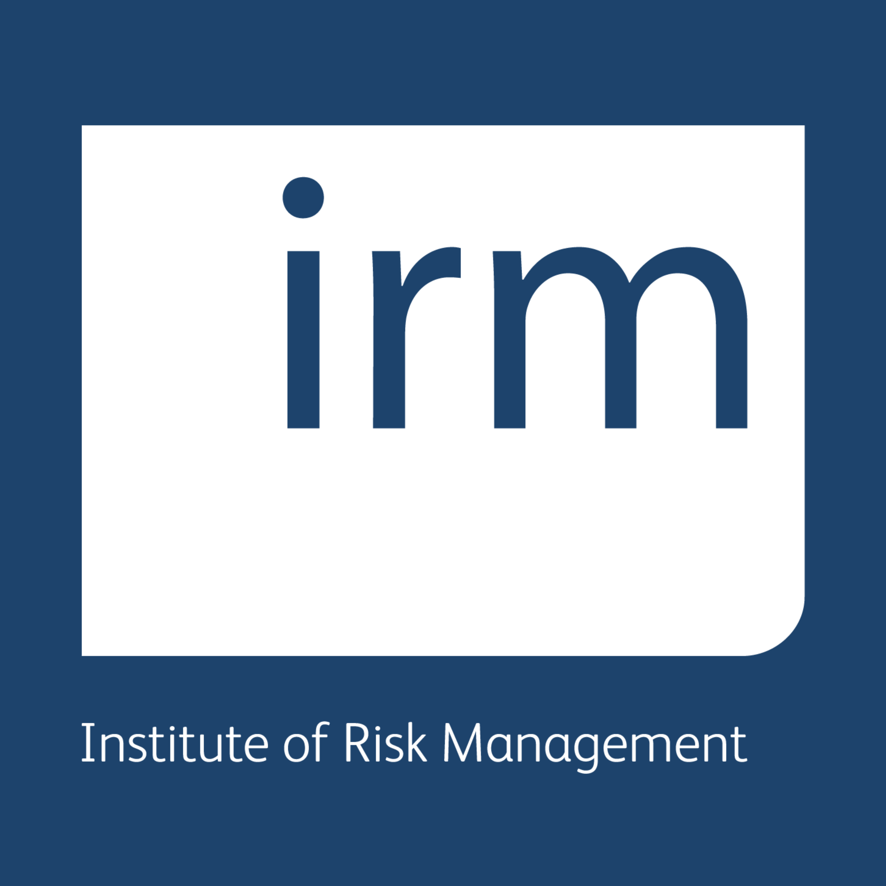
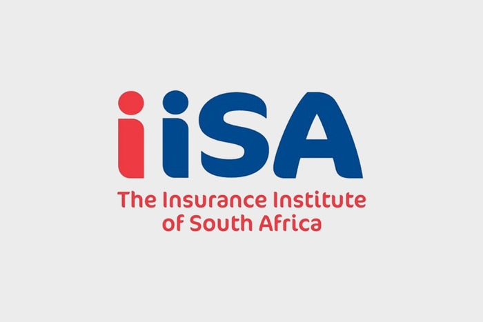
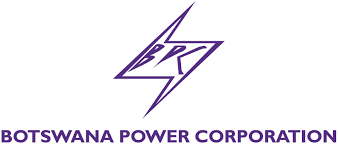
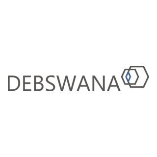
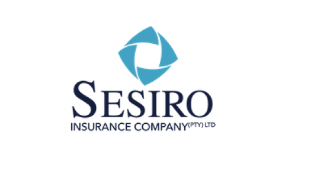

Excellence
Excellence in every solution we deliver.
Welcome To Risk Engineers Botswana
Hero’s Peak (Pty) Ltd, trading as Risk Engineers Botswana (REB), is a 100% citizen-owned, independent dual risk management and engineering services provider established in 2018. REB has built a track record across energy, mining and industrial assignments, supported by a multi-skilled team of specialists and engineers with over 70 years of combined experience.
The team is purposefully assembled to respond to a wide spectrum of risk and engineering consultancy assignments, from enterprise risk management and risk engineering to business continuity, ESG and integrated reporting.
Excellence in every solution we deliver.
Innovation to meet evolving industry needs.
Collaboration to achieve tailored, effective outcomes.
Expertise grounded in deep technical and sectoral knowledge.
Integrity as the foundation of our ethical and transparent approach.
Sustainability and integrated reporting that help clients turn responsible practice into competitive advantage.
The About Us page features the curated executive team only. Full staff profiles are available on the Team page.

Over 30 years across risk management, risk financing, insurance and claims management, including establishment of Debswana’s risk management function and Sesiro.
View full profile
Multidisciplinary risk professional spanning chemical and process engineering, ERM, ESG, business strategy and business continuity.
View full profileRisk Engineers Botswana is committed to assisting clients in implementing risk-aware decision-making across their organisations. Our iterative risk management process identifies key risks spanning operations, business functions and projects, considering industrial, micro and macro environments.
Continuous risk assessments and scenario evaluations inform integrated risk modelling connected to interactive dashboards, empowering clients to make informed decisions for effective risk mitigation and management.
Verbatim feedback from organisations REB has worked with.
"We wish to further state we are pleased with the quality of the survey reports, findings and ultimate recommendations produced by REB under his guidance. We therefore have no doubt in his capability as a qualified risk professional and we can confidently recommend him for such similar assignments."
"I have no hesitation in recommending Risk Engineers Botswana for any risk management including his speciality area of business continuity planning and insurance consultancy work."

"Please note that Paul Ramokgalo has done work on Business Continuity Management at Lucara Botswana in 2014. The work done for the company was done in a professional manner. The training done was done at the a high level of professionalism and was delivered in an efficient and effective manner."

"We believe that Risk Engineers Botswana under the leadership of Paul, has the capability in manpower, technical and financial resources to be able to handle a project of any magnitude in risk management and business continuity planning."
"Risk Engineers Botswana did brokering services and risk survey respectively for my organisation, BTC. In all our interactions Paul displayed a high level of professionalism, commitment and a result oriented professional. I therefore have the full confidence that Paul will add value to your business if offered any service to deliver."



When you partner with REB, you experience tailored solutions and active involvement throughout the risk management process.



Check out our FAQ section for answers to some of the most common inquiries we receive. If you need more information, feel free to contact us directly.
Risk Management is the process of identifying, assessing, and mitigating potential risks to achieve business objectives. It is crucial for minimising uncertainties, optimising decision-making, and safeguarding the overall health of an organisation.
Implementing a Risk Management strategy enables businesses to proactively address potential threats, make informed decisions, enhance resilience, and safeguard against financial losses, contributing to sustainable growth.
Integrating risk-aware decision-making ensures a holistic approach, identifying and mitigating risks across operations, projects and environments while safeguarding the overall business strategy.
Risk Management provides a structured approach to identifying and addressing potential disruptions. Preparing for and mitigating risks strengthens resilience and helps minimise the impact of unforeseen events.
Yes. Risk Management principles are adaptable across industries and can be tailored to different operational, financial, strategic and regulatory contexts.